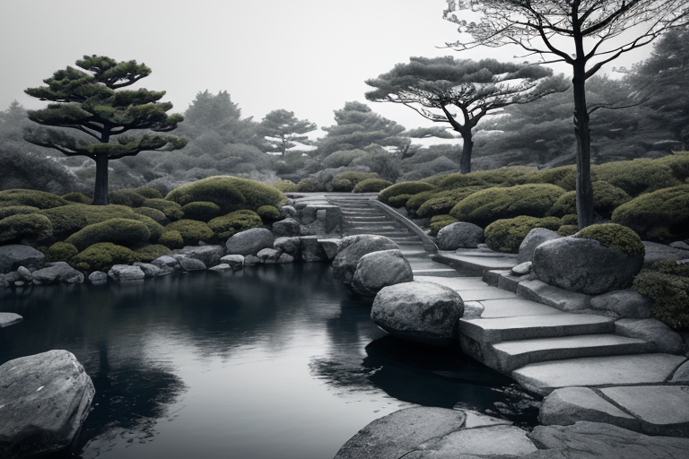
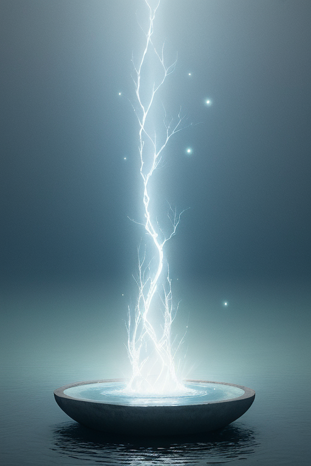
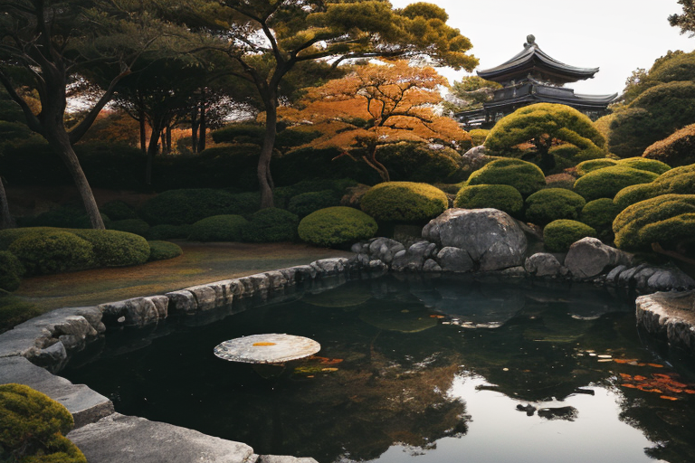
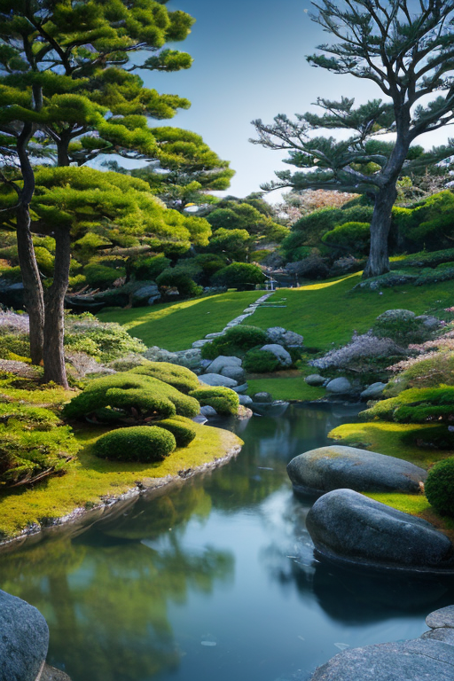
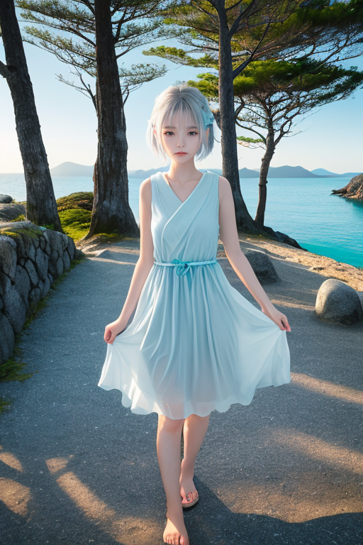

第一章 現実の香川
あなたはまだ気づいていない。この土地にも、王がいることを。
栗林公園の池面は、冬の朝靄に包まれ、鏡のように静かだ。水面に映る松の枝ぶりは、百年をかけて剪定された「無駄のない美」そのもの。訪れる人は少なく、その静寂こそが、この庭の本質だと感じる。ここは、余分なものを削ぎ落とす「簡素」の力が、最も濃く眠る場所の一つである。
その力の主は、簡素王カガワリア・ミニマだ。彼は今、園内の「掬月亭」の縁に佇み、目を閉じている。見えない手で、土地の微細な「歪み」――地盤のわずかなひずみ、地下水脈の不自然な流れ――を撫でるように整えている。大災害を消すことはできない。だが、次の揺れが来る時、その力を一段階、ほんの少しだけ和らげる調整は可能だ。彼の仕事は、派手な救済ではなく、このような地味な微調整の積み重ねである。
彼の傍らには、主席妖精ミニエルが寄り添う。ミニエルは無言で、周囲から湧き上がる「無駄な波」――人々の焦りや雑念が生む微細な乱れ――を静かに吸収し、消去していく。すべては最小限で、無駄なく。
王は目を開け、庭を見渡した。剪定された松、計算された石の配置。そこには完璧なまでの「少なさ」の美学があった。しかし、彼はふと考える。この削ぎ落とされた静けさの果てに、本当の豊かさはあるのだろうか、と。

第二章 歪みの兆候
栗林公園の池の水面に、微かな波紋が立った。風はない。王はその不自然な揺らぎを、瞬時に「歪みの兆候」と認識した。地中を流れる無駄なエネルギーの波が、結界の薄膜を押し上げたのだ。妖精ウドニアが駆け寄り、細い腕を地面に差し伸べる。彼女の手から伸びる無数の「簡素線」が地中に潜り、余分な振動を削ぎ落としていく。直島の海岸では、芸術祭のモニュメントがかすかに軋んだ。父母ヶ浜の鏡のような水面に、一筋の乱れが走る。
封印は劣化し始めていた。空海がこの地に刻んだ「簡素」の理は、長い時間と、増えすぎた人々の「もっと」という欲望に、少しずつ侵食されていた。王は無感情であるはずだった。だが、削ぎ落とすべき「無駄」の中に、ふと、笑い声や、家族の団らんの温もりが混じっていることに気づいた時、彼の心臓――存在の核――に、説明のつかない小さなひっかかりが生じた。それは、感情の萌芽だった。

第三章 王の葛藤
栗林公園の南湖に、一枚の紅葉が落ちた。水面に描かれる波紋は、いつもより僅かに乱れていた。王は、その中心に立つ。彼の足元では、無数の「簡素線」が地中に張り巡らされ、増えすぎた観光客の熱気や、過剰な期待の「無駄波」を削ぎ落としていた。しかし、線は所々で軋み、ほつれかけている。
削ぎ落とすべきは、確かに無駄だ。しかし、直島のベネッセハウス前で、初めて現代美術を見て目を輝かせる子供の興奮。父母ヶ浜で、夕陽を背景に写真を撮り合う恋人たちの、少しばかり大げさな笑顔。それらを「無駄な感情の揺らぎ」として排除すべきなのか。王は、手に持った和三盆の砂糖を一粒、掌で転がす。極限まで無駄を排した精製過程。その純白は、彼自身の在り方に似ている。だが、その甘みは何のためにあるのか。
「削減、継続」。ミニエルが淡々と告げる。王は頷きかけるが、指先が止まった。削ぎ落とす行為そのものが、今や彼に「迷い」という新たな無駄を生んでいた。少なさこそが豊かさであるという理。その理が、初めて重く感じられた。

第四章 妖精との対話
「王よ、迷いは無駄です」
栗林公園の南湖畔で、ミニエルは静かに言った。水面に映る松の枝ぶりは、百年をかけて無駄を削ぎ落とした結果の美だ。
「我々の王国は、『簡封印』の世界線にあります。かつてこの地は、豊穣の海路で栄え、多くの物と情報が往来しました。しかし、それは歪みも増幅させた。故に、初代王は『簡素』の封印を選びました。余剰を排し、必要最小限に留めることこそが、この列島の歪みを増やさぬ最善の調整だったのです」
王は黙って聞く。直島の海岸に打ち寄せる波の音が、遠くから聞こえるようだ。
「少なさは豊かさか。その問いは、封印の核心です」ミニエルは続けた。「削減は豊かさへの逆行ではなく、別の豊かさへの道程でした。讃岐うどんの出汁も、和三盆の製法も、全ては不純物を排する過程で生まれた純粋な味。無駄を削ぎ落とした先に、初めて見えるものがある」
王は掌の和三盆の粒を見つめる。削ぎ落とすこと。それは確かに、何かを守るための行為だった。

第五章 微調整と余韻
直島の海岸に、封印の微調整が完了した余韻が漂っていた。王は、削ぎ落とした無駄波の残滓を掌に集め、静かに海へと返した。それは、決して無かったことにはできない代償の予感。削減の先に見えた豊かさは、失われた何かの痕跡の上に、かろうじて成立している。
金刀比羅宮の石段を、一人の老人がゆっくりと上っていた。その足取りは確かに、本来ならば数段、躓いていたはずだ。王は遠くからそれを見つめ、感情のない瞳に、微かな揺らぎが走る。調整は完了した。歪みは修復された。しかし、彼が削ぎ落とした「無駄」の中に、かつては誰かの「偶然」や「縁」が含まれていたかもしれない、という思いが、初めての後悔のようなものを生んだ。
少なさは豊かさか。問いへの答えは、未だ手の中にない。ただ、削減の果てに残った静謐な時間が、今、確かにここを流れている。
あなたの町にも、王がいる。